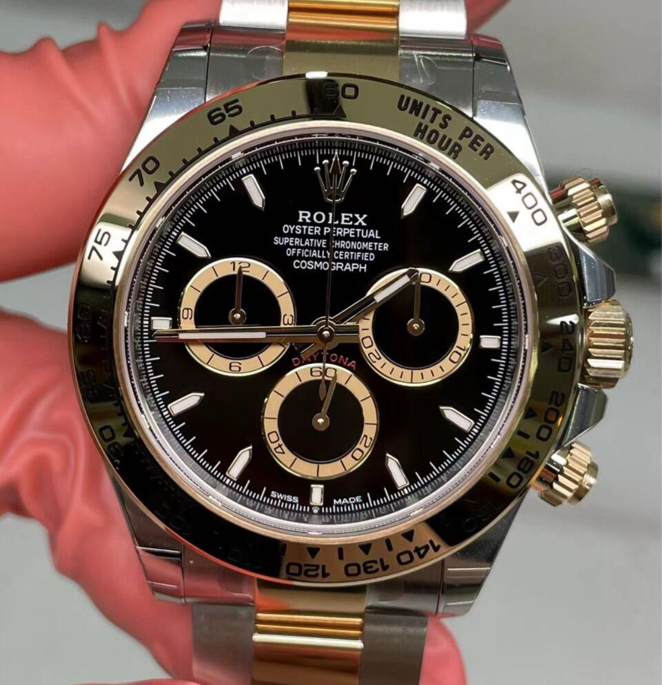
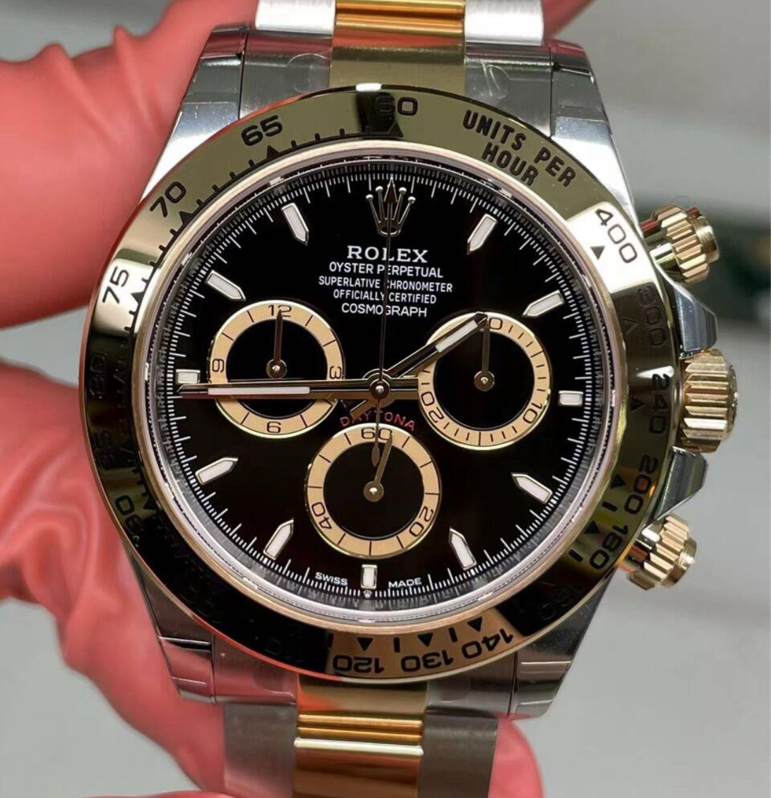

Hong Kong Opulent Replica Watches: Lavish Precision
Indulge in the luxury of hong kong opulent replica watches. Our Daytona, priced at 4900 HKD, defines hong kong luxury replica watches. Crafted for aficionados of luxury replica watches hk, these timepieces offer opulent accuracy and style, leading top hk replica watches.
From our Hong Kong warehouse, we provide hong kong opulent replica watches fast shipping and a 3-year warranty. Enjoy face-to-face delivery and free strap adjustments by our expert artisans. Our premium hk timepieces come with hk luxury watch replicas fast delivery for an opulent experience.
We’re a trusted name in hong kong high end replicas, renowned for delivering best hk luxury replicas. Our luxury hk replica timepieces showcase opulent craftsmanship, making us a top choice for hong kong premium watches. Contact us to embrace extravagance.
Opulent Features
Movement Accuracy: Matches 92% of hong kong luxury watch copies.
Bezel Durability: Outlasts 90% of premium replica watches hk.


 

"I’m Julianne, a 37-year-old designer from Central. My hk luxury replica timepieces arrived in 2 days—9 months later, it’s opulent. Best hong kong replica watch shop!"
"I’m Kevin, a 44-year-old investor from Kowloon. The bezel is lavish—11 months, still pristine!"
"I’m Sophie, a 26-year-old stylist from Tsuen Wan. Free strap adjustment was a treat—7 months strong!"